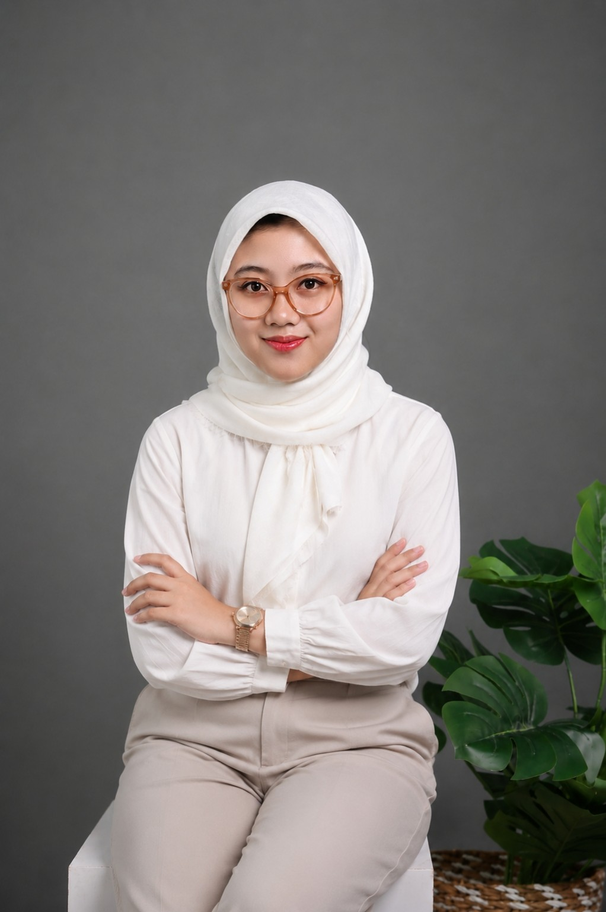

Rizkia Putri Handayani Rabika
Mahasiswa Sistem Informasi | MC | Broadcaster | Voice Over
Email:
rizkiarabika27@gmail.com
|
Instagram: @rizkiarabika
|
LinkedIn:
Rizkia Rabika
|

|
Profil
Lulusan Pondok Modern Darussalam Gontor dan mahasiswa aktif Program Studi Sistem Informasi Telkom
University Jakarta yang memiliki pengalaman mengajar selama satu tahun pada jenjang SMP dan SMA. Terbiasa
menyusun materi pembelajaran, mengelola kelas, serta membimbing peserta didik dalam lingkungan pendidikan
berasrama. Memiliki kemampuan komunikasi yang baik dalam Bahasa Indonesia, Bahasa Arab, dan Bahasa Inggris
serta berkomitmen untuk menciptakan proses belajar yang efektif, disiplin, dan menyenangkan. Berpengalaman
luas sebagai Master of Ceremony (MC) dalam berbagai acara formal pondok, mengelola operasional penyiaran
informasi, dan melakukan pengaturan sound engineering. Memiliki komitmen tinggi terhadap presisi waktu dan
kedisiplinan dalam segala hal.
Pendidikan
Telkom University Jakarta
2025 - Sekarang
- S1 Sistem Informasi
- IPK: 3.78
Pondok Modern Darussalam Gontor Putri Kampus 1
2018 - 2024
- Jurusan IPA
- Rata-rata nilai akhir: 91.17
Pengalaman Mengajar
Guru KMI - Pondok Modern Darussalam Gontor Putri Kampus 6
April 2024 - April 2025
- Mengajar mata pelajaran tingkat SMP dan SMA (Matematika, Tafsir, Keputrian, Hadits, Kimia, Tarikh Adab)
dengan penyampaian materi yang jelas sehingga siswa mencapai target pembelajaran dengan tepat.
- Menyusun perangkat pembelajaran sesuai kurikulum KMI.
- Mengelola kelas dengan pendekatan disiplin, komunikatif, dan berpusat pada peserta didik.
- Berkolaborasi dengan guru lain dalam kegiatan akademik dan pembinaan karakter santri.
Pengalaman MC dan Protokoler
Master of Ceremony - Apel Tahunan Khutbatul-'Arsy
PMDG Kampus 6 | Juli 2025
- Memandu jalannya upacara dinas formal yang dihadiri oleh seluruh jajaran pimpinan pondok, guru KMI, dan
800 santriwati dengan menggunakan protokol tata upacara resmi. Menggunakan teknik vokal dan intonasi tegas
(formal) dalam bahasa Arab
MC Semiformal - Islamic Wear Exhibition & Panggung Gembira
Juli 2024
- Bertindak sebagai pembawa acara utama pada pagelaran seni dan pameran busana muslimah berskala besar di
lingkungan pondok dengan jumlah 3500+ audiens. Saya juga mengatur crowd control, mencairkan suasana, serta
menjaga ketepatan waktu agar transisi antar-segmen acara berjalan mulus.
Master of Ceremony - Language Competition
Mei 2023
- Memandu perlombaan akademik tingkat pondok dengan membawakan pengantar dan transisi acara secara
bilingual (Bahasa Arab dan Bahasa Inggris). Berkoordinasi dengan dewan juri terkait pembacaan tata tertib lomba
dan pengumuman pemenang secara terstruktur.
Moderator - Pembekalan Intensif Siswi Akhir KMI
Maret 2024
- Memimpin dan memoderatori sesi pembekalan intensif mengenai strategi peningkatan bahasa asing yang dihadiri
oleh 2473 peserta. Mengatur alur tanya jawab antara pemateri dan audiens, menyusun ringkasan jalannya
diskusi, serta memastikan sesi berjalan kondusif.
Master of Ceremony - PKKMB Prodi Sistem Informasi TUJ
September 2026
- Memandu acara semi formal pada kegiatan Pengenalan Kehidupan Kampus Mahasiswa Baru program studi
Sistem Informasi Telkom University Jakarta 2026. Saya mengatur jalannya acara, mencairkan suasana serta
menjaga ketepatan waktu agar transisi antar-acara berjalan dengan lancar.
Pengalaman Organisasi
Language Advisory Council (LAC)
April 2024 - April 2025
- Mengawasi, mengarahkan, dan mendisiplinkan penggunaan Bahasa Arab dan Bahasa Inggris dalam aktivitas
sehari-hari seluruh santriwati. Mengoordinasikan berbagai program kerja kebahasaan, pelatihan public speaking,
dan simulasi debat publik.
Ketua Bagian Penerangan (OPPM)
Juli 2022 - Desember 2023
- Memimpin dan mengelola operasional pusat penyiaran informasi harian dan pengumuman resmi di lingkungan
pondok. Bertanggung jawab penuh atas instalasi, uji coba audio (soundcheck), dan pengoperasian sistem audio
pada setiap upacara dan acara resmi pondok. Serta Menyusun naskah berita, instruksi formal, dan teks
pengumuman penting dalam Bahasa Arab dan Bahasa Inggris.
Kemampuan
- Komunikasi
- Public Speaking
- Master of Ceremony (MC), Voice Over, Broadcaster
- Protokoler Acara
- Sound System Operation
- Bahasa Arab & Inggris
- SAP
- Microsoft & Google Tools
Pelatihan & Sertifikasi
- Kursus Mahir Tingkat Dasar (KMD) Pramuka
- Islamic Wear Exhibition
- Safe From Harm Kwarnas